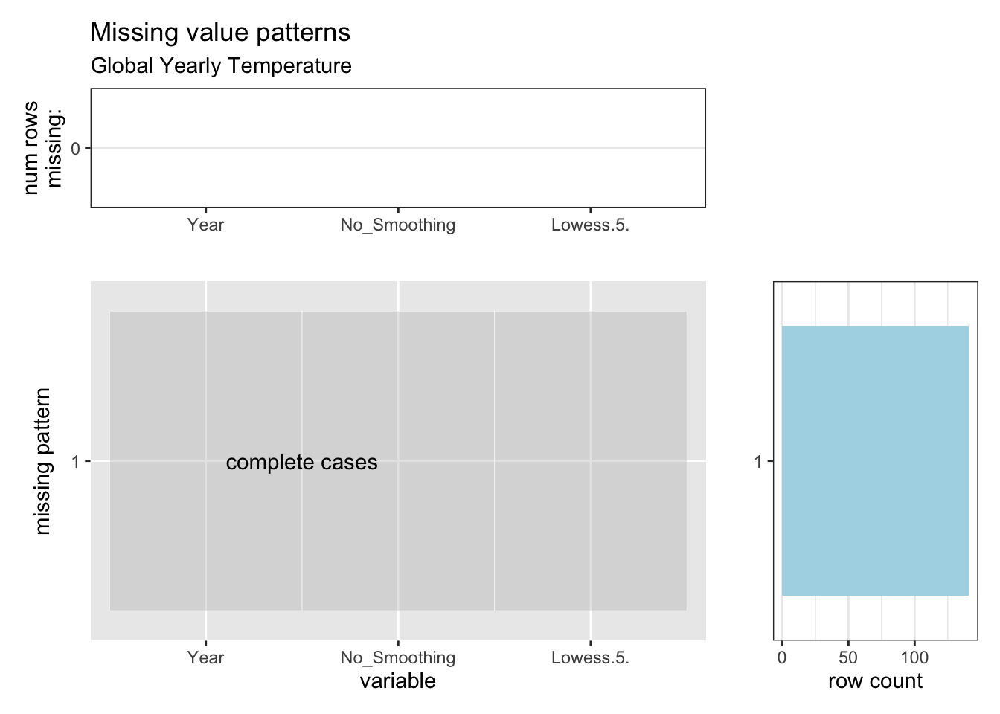
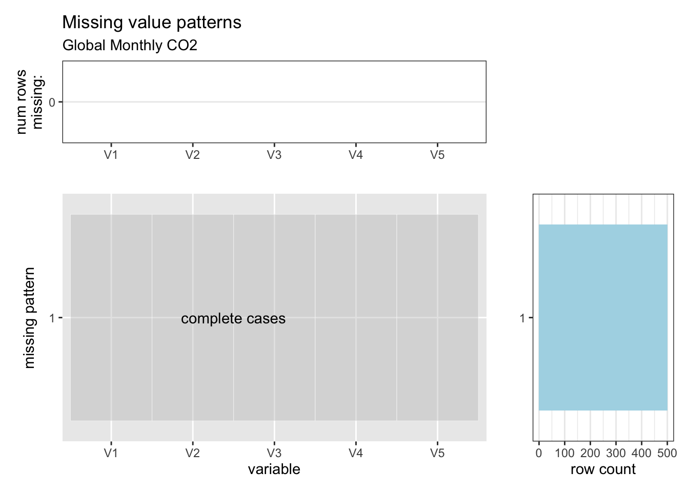
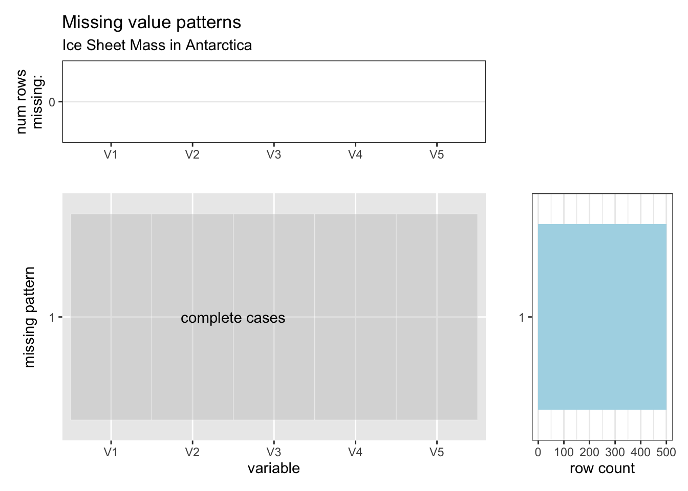

Chapter 5 Results
5.1 Main causes of climate change
In the past more than a hundred years, the global land-ocean temperature kept increasing. So we plan to figure out what leads to the current warming trend. In the following discussion, we explore the effects of natural factors and human activities on temperature.
5.1.1 Natural causes
Changes of the Earth’s orbit around the sun and the tilt of the Earth’s axis define the sequence of glaciation periods and warm periods, and influence the climate on Earth by changing the energy the Earth could receive from the sun. Thus the metrics of Earth’s orbit and the solar irradiation are taken into account for the natural causes of climate change. In 1930s, Milutin Milankovitch introduced the concept of Milankovich cycles to describe the changes of Earth’s orbit, which includes eccentricity to describe the shape of Earth’s orbit, obliquity and precession to describe the Earth’s axis. Eccentricity = (aphelion-perihelion)/(aphelion+perihelion). Obliquity is the angle Earth’s axis of rotation is tilted as it travels around the Sun. And insolation, which denotes the daily mean solar irradiation at the top of Earth’s atmosphere, is introduced to show the irradiation the Earth receives from the sun. The following shows the changes of eccentricity, obliquity and insolation in the past around five thousand years from 2800s BC to now.

In the past five thousand year period, all three metrics fluctuates periodically and there is no obviously abnormal curve appears in the recent 200 years, when the global warming occurred, compared to the curve before. It seems that the value of eccentricity increases over a long time span, it is more reasonable to regard it as a normal fluctuation in a long period rather than a sudden change in short term, considering the eccentricity of Earth has a period of about a hundred thousand year.
Then we focus more on the recent 200 years.

In the short term, both obliquity and isolation have relatively smooth cycle changes while eccentricity has a declining trend.
To have a better insight of the relationship between these natural causes and temperature, we use the data from 1880 to draw the scatter plots and make linear fitting. In the plot, the color of points denotes the corresponding year. 
From the plot between eccentricity and temperature, we could observe that there is a negative correlations between eccentricity and temperature. The points that gather at the bottom right corner are dark blue, which means in the early time, the temperature is lower while the value of eccentricity is larger, coinciding with the time series plots above. And for points in light blue, they are more likely to gather at top and middle of the left side. It shows that during the nearest time, the value of eccentricity is smaller than the previous but has a relatively stable value, while the temperature still keeps going up. So it seems that the change of Earth’s orbit has influenced the temperature to some degree, but it is not the main reason for the continuous warmer weather, at least in the recent 50 years when the value of eccentricity does not change a lot. And we also need to notice that in the other two scatter plots that show relationships of temperature with obliquity and insolation, there is no obvious linear correlations between two variables, indicating that changes of the tilt of Earth’s axis and the amount of solar irradiation does not play an important role in warming trend. As mentioned above, the change of Earth’s orbit influences climate change by changing the solar irradiation. Although the eccentricity has an obvious change, the irradiation received by Earth keeps fluctuating between a stable value in the recent 200 years, which could be explained by the claim that there are other factors that offset the effect of Earth’s orbit. Based on the analysis above, we could hardly draw to the conclusion that there are strong causal relationship between natural factors and global warming.
5.1.2 Human causes
The accumulation of greenhouse gas in the atmosphere will make the heat trapped on the surface of Earth, thus lead to the temperature increase on Earth. Since the Industrial Revolution, deforestation, fossil fuel use and other human activities have led to the huge increase in green house gas. Although there are some natural activities that can also influence the gas in atmosphere, the abnormal increase should be mainly attributed to human. So we collect the global mean mole fraction of four frequently analyzed green house gas, including CH\(_4\), CO\(_2\), N\(_2\)O, SF\(_6\), to explore their relationships with current climate change.
In the following plot, we show how the gas concentration of four green house gases varied monthly with time in the past years. The start time of each plot is based on the time National Oceanic and Atmospheric Administration (NOAA) started to record the global data of the gas.
In addition to the periodical fluctuations, the trends for mole fraction of all four gases are increasing. Except that the curve for CH\(_4\) has a platform from 2000 to 2007, other three curves show slightly faster growth than linear growth. For Further analysis, the plot below shows the growth rate of four gases. To eliminate the influence of periodical fluctuations on the understanding of the whole pattern of trend, we use the yearly data to display the changes.

Although from 1999 to 2006, the mole fraction of CH\(_4\) displays a negative growth or a small growth rate, in other years from 1880s to now, its growth rate is much larger than other gases. The growth rates of other three gases are relatively small, but show a continuous increasing trend. Then we analyze the relationships between the gas concentration in the atmosphere and global temperature by drawing scatter plots and hexagonal heatmaps. Every point in scatter plots denotes mean temperature and mean mole fraction in one month from Jan 2001 to Aug 2021.The color indicates to the time in scatter plots while indicates to the density of data points in hexagonal heatmaps.


In the scatter plots, we can observe obvious positive correlations between mole fraction and temperature for four gases. And in all four plots, the points with darker colors, which means earlier times, are more likely to gather at the left bottom corner, while the lighter blue points tend to gather at the right top corner. The scatter plots displays a pattern coinciding with the analysis above that the emissions of greenhouse gas are increasing as time goes by, and at the same time, the global temperature keeps an increasing trend. Then from the hexagonal heatmaps, we observe that the points at the left bottom corner have a higher density, while points in the center and at the right top corner of plots are relatively sparse. Considering that the time is uniformly distributed, it indicates that the growth rates for both gas and temperature are higher in more recent years. From the analysis above, we find that the greenhouse gas concentration and temperature have similar behaviors in recent years. So it is of high possibility that the accumulation of greenhouse gas in the atmosphere is one of the main reason for the global warming.